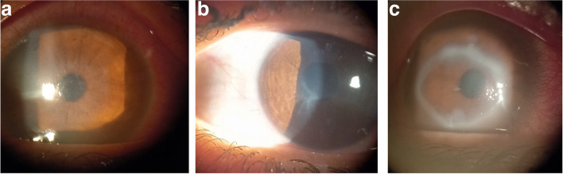
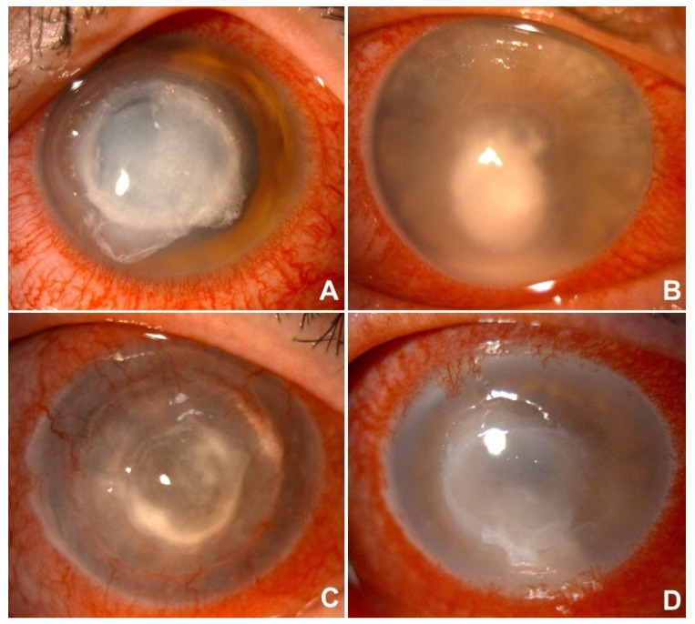
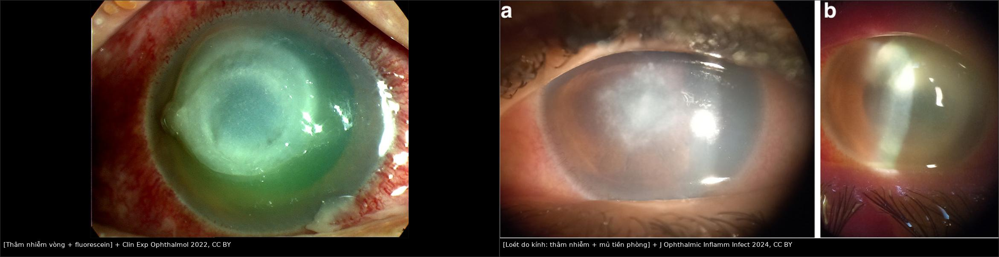
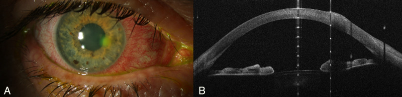
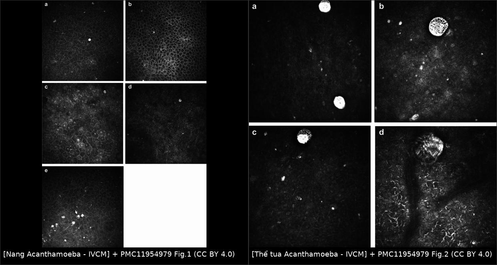
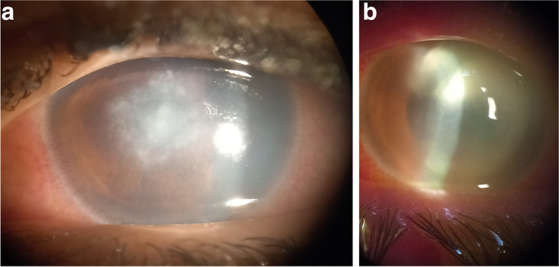

6132 — Viêm giác mạc nhiễm khuẩn liên quan kính tiếp xúc: phân biệt thâm nhiễm vô khuẩn với nhiễm khuẩn thật & bẫy Acanthamoeba / Contact lens-related microbial keratitis
Tags: pattern:tham-nhien-giac-mac pattern:loet-giac-mac pattern:khuyet-bieu-mo pattern:vet-thuong-bieu-mo vung:giac-mac vung:mat protocol:den-khe protocol:sinh-thiet-giac-mac protocol:nuoi-cay protocol:IVCM protocol:AS-OCT
Mức chắc chắn (certainty): tổng hợp y văn (literature synthesis) — bổ sung 2026-11-13: đoàn hệ Pseudomonas 66 mắt ở Anh (Front Med 2026, PMC13395769), nghiên cứu yếu tố nguy cơ vệ sinh kính Ai Cập 2024 (PMC11336145) và tổng quan viêm giác mạc nhiễm trùng (Clin Exp Ophthalmol 2022, PMC9542356) — đoàn hệ 41 bệnh nhân/42 mắt nhập viện vì viêm giác mạc nặng liên quan kính tiếp xúc (Sund MH et al., Acta Ophthalmol 2025, PMC11986396), 138 ca viêm giác mạc do vi khuẩn liên quan kính tại Nottingham 7 năm (Suresh L et al., Eye 2024, PMC11621543), 221 mắt viêm giác mạc nhiễm trùng tại trung tâm tham chiếu (Moramarco A et al., Microorganisms 2025, PMC12565946), nghiên cứu AS-OCT phân biệt Pseudomonas (Khalil H et al., Transl Vis Sci Technol 2023, PMC10691401) và 27 ca IVCM Acanthamoeba (Przybek-Skrzypecka J et al., Sci Rep 2025, PMC11954979). Các ca trong mục (6) là ca của bài gốc, ghi rõ nguồn từng ca; không có ca nguyên văn của nhóm.
Điểm chốt: kính tiếp xúc không chỉ là "yếu tố nguy cơ" — nó quyết định chùm tác nhân (Pseudomonas, Acanthamoeba, nấm sợi) và tốc độ (vi khuẩn 24–48 giờ). Câu hỏi đầu tiên trên đèn khe không phải "loét to hay nhỏ" mà là "biểu mô còn nguyên hay đã mất, và thâm nhiễm sâu tới đâu" — vì thâm nhiễm vô khuẩn (CLARE/IK) và nhiễm khuẩn thật trông giống nhau nhưng xử trí ngược nhau.
1. Tổng quan bệnh học – cơ chế hình ảnh
- Vì sao đeo kính làm giác mạc dễ nhiễm: kính làm giảm trao đổi nước mắt và oxy dưới kính, tăng vi chấn thương biểu mô khi tháo/lắp và khi kính khô, đồng thời tạo màng sinh học (biofilm) trên kính và hộp đựng — nơi Pseudomonas aeruginosa và amip bám vào. Vi khuẩn tiết exotoxin A, protease, elastase phá mô đệm; amip xâm nhập dây thần kinh giác mạc và nang hóa trong mô đệm. Vì vậy cùng một "vết xước nhỏ", Pseudomonas có thể thành loét thủng trong 24–48 giờ, còn Acanthamoeba diễn tiến nhiều tuần với đau không tương xứng.
- Vì sao hình ảnh trông như vậy (vật lý + mô bệnh):
- Thâm nhiễm trắng trên đèn khe = tế bào viêm (chủ yếu bạch cầu đa nhân) + phù mô đệm. Mật độ tế bào càng cao và càng sát bề mặt → tán xạ ánh sáng càng mạnh → càng đục trắng; mất biểu mô → fluorescein bắt màu xanh lá.
- Vòng thâm nhiễm (ring infiltrate) = lắng đọng phức hợp kháng nguyên–kháng thể và tế bào viêm ở mô đệm trước, không phải "màng" — vì thế nó không bóc được và không đặc hiệu cho amip (còn gặp trong nấm, HSV, Pythium, dị vật).
- Viêm dây thần kinh dạng tia (radial keratoneuritis) = amip di chuyển dọc dây thần kinh giác mạc gây thâm nhiễm quanh sợi trục — dấu hiệu gợi ý mạnh nhưng không có ở mọi ca.
- AS-OCT đo trực tiếp độ dày thâm nhiễm và mô đệm còn lại; Pseudomonas gây tăng thể tích mô 30% so với 15% ở Gram dương (p = 0,041) và thâm nhiễm dày hơn (p = 0,009) — vì Gram âm bùng nổ phản ứng viêm và phù mô mạnh hơn.
- IVCM (confocal đồng tiêu) phát hiện nang amip hai vách ~10 µm dạng điểm sáng (bright spot), thể tua (trophozoite) và dấu signet-ring; đây là bằng chứng tế bào sống tại chỗ, bổ sung cho cấy.
- Ngưỡng định lượng phải nhớ:
- Tần suất viêm giác mạc NẶNG phải nhập viện: 2,52/10.000 người dùng kính đeo qua đêm (extended wear) mỗi năm, so với 0,52/10.000 ở người dùng kính dùng một lần/ngày (Sund 2025, PMC11986396).
- Nhóm vi khuẩn: 138 ca Nottingham — trong 64 ca cấy dương, Pseudomonas 49,3%, Staphylococcus 21,9%, đa vi khuẩn 4,3%; 97,0% khỏi chỉ bằng kháng sinh tại chỗ (Suresh 2024, PMC11621543).
- Tỷ lệ tác nhân ở trung tâm tham chiếu (221 mắt): vi khuẩn 64%, virus 20%, nấm 13%, amip 3,2%; 42,5% có đeo kính; cấy dương 75,7% (Moramarco 2025, PMC12565946).
- IVCM so với cấy trong Acanthamoeba: IVCM phát hiện 85% (23/27) so với cấy 74% (20/27); điểm sáng 87%, nang hai vách 56%, signet-ring 22%, thể tua 30% (Przybek-Skrzypecka 2025, PMC11954979).
- Cấy âm 34–62% trong viêm giác mạc vi khuẩn — cấy âm không loại trừ nhiễm khuẩn (Khalil 2023, PMC10691401).
2. Mẫu hình + chẩn đoán phân biệt theo vị trí (Gamut)
Hỏi theo thứ tự: có đeo kính không? → biểu mô còn nguyên hay mất? → thâm nhiễm nông hay sâu, trung tâm hay ngoại vi? → có vòng thâm nhiễm/tia thần kinh/hypopyon? → tốc độ onset bao lâu?
- Thâm nhiễm mủ đặc, khởi phát < 48 giờ, đeo kính qua đêm: Pseudomonas (hàng đầu), Serratia, Klebsiella; kèm hypopyon và mủ bám mặt sau kính.
- Thâm nhiễm nhỏ, ngoại vi, biểu mô còn nguyên, đau nhẹ: CLARE/IK vô khuẩn (contact lens acute red eye / infiltrative keratitis) — phản ứng viêm với nội độc tố vi khuẩn trên kính, không phải nhiễm mô.
- Vòng thâm nhiễm + đau nhiều hơn mức thấy + tia thần kinh + tiền sử bơi/nước máy/rửa kính bằng nước: Acanthamoeba.

Ba dấu hiệu hay gặp của Acanthamoeba trên đèn khe: (a) thâm nhiễm dưới biểu mô dạng chấm, (b) viêm thần kinh tỏa tia, (c) thâm nhiễm vòng. Không dấu nào đặc hiệu một mình — chốt bằng IVCM/PCR/cấy. Nguồn: J Ophthalmic Inflamm Infect 2024 (PMC11336145), CC BY 4.0.- Bờ tua (feathery), vệ tinh (satellite), tiền sử chấn thương thực vật: nấm sợi (Fusarium sau kính, Aspergillus sau chấn thương); diễn tiến chậm, nhiều tuần.
- Nhánh gai (dendrite)/loét địa đồ + tiền sử HSV: HSV giác mạc — không phải "loét do kính", nhưng thường bị chẩn đoán nhầm và nặng lên nếu dùng corticoid.
- Vị trí quyết định mức khẩn: trung tâm/trục thị giác → nguy cơ sẹo thị lực, can thiệp sớm; ngoại vi → thường vô khuẩn nhưng vẫn phải loại trừ nấm/amip nếu bờ không đều.
- Gợi nhớ "PAF-H": Pseudomonas, Acanthamoeba, Fungal, HSV — bốn nhóm phải nghĩ trước khi kê "kháng sinh chung".
- Nhóm do kính có tiên lượng tốt hơn nhóm không do kính (định lượng): trong 66 mắt Pseudomonas (Anh 2016–2020), 53,1% do kính; nhóm do kính trẻ hơn, thị lực vào viện tốt hơn, loét nhỏ và không ở trung tâm, ít mủ tiền phòng, lành 17 ngày so với 32 ngày (p = 0,029) và nguy cơ thị lực xấu thấp hơn (aOR 0,13; KTC 95% 0,01–0,84); 97,0% chủng còn nhạy kháng sinh (Front Med 2026, PMC13395769).
- Yếu tố nguy cơ vệ sinh — con số để tư vấn: tắm/bơi khi đeo kính (p = 0,012) và rửa kính bằng nước máy (p = 0,030) tăng loét nhiễm trùng; đeo > 12 giờ/ngày tăng loét không nhiễm trùng ~ 4 lần (p = 0,030); đeo qua đêm tăng 2,6 lần (p = 0,030) (J Ophthalmic Inflamm Infect 2024, PMC11336145).
3. Bảng so sánh phân biệt (ma trận đối chiếu)
| Thực thể (entity) | Hình ảnh điển hình (đèn khe / AS-OCT / IVCM) | Chốt vào (rule-in) | Chốt loại (rule-out) | Gợi ý xác nhận |
|---|---|---|---|---|
| Pseudomonas | Thâm nhiễm mủ đặc, trắng vàng, bờ không đều, hypopyon, phù mô mạnh; AS-OCT: thâm nhiễm dày, mô tăng 30% | Đeo kính qua đêm + khởi phát < 48 giờ + thâm nhiễm mủ đặc | Bờ tua/vệ tinh + diễn tiến chậm → nghĩ nấm; vòng + đau không tương xứng → amip | Cấy/scrape; AS-OCT (mô hình Se 85,7%/Sp 91,7%) |
| Gram dương (Staph) | Thâm nhiễm khu trú, bờ tròn, mô tăng 15%, thường ngoại vi | Thâm nhiễm nhỏ, bờ đều, tiến triển chậm | Thâm nhiễm lan + mủ đặc + hypopyon → Gram âm | Cấy; đáp ứng kháng sinh 48 giờ |
| Acanthamoeba | Vòng thâm nhiễm, tia thần kinh, đau nhiều; IVCM: điểm sáng/nang hai vách | Đau không tương xứng + vòng/tia + tiền sử nước | Chỉ thâm nhiễm mủ đặc không vòng → ít nghĩ amip | IVCM (85% vs cấy 74%), PCR, cấy amip |
| Nấm sợi | Bờ tua, vệ tinh, đôi khi vòng; AS-OCT: thâm nhiễm sâu, bờ không đều | Chấn thương thực vật/kính + bờ tua + vệ tinh | Bờ đều, đáp ứng nhanh kháng sinh → ít nghĩ nấm | Nhuộm/cấy nấm, IVCM sợi nấm |
| HSV | Nhánh gai, loét địa đồ, giảm cảm giác giác mạc | Nhánh gai điển hình + tiền sử tái phát | Nhánh giả do thuốc/dị vật → xem bờ và cảm giác | PCR HSV, đáp ứng acyclovir |
| CLARE/IK vô khuẩn | Thâm nhiễm nhỏ, ngoại vi, biểu mô nguyên, không hypopyon | Kính + thâm nhiễm ngoại vi + biểu mô nguyên + đau nhẹ | Biểu mô mất, thâm nhiễm trung tâm, hypopyon → không phải vô khuẩn | Theo dõi 24–48 giờ sau ngừng kính |
| Pythium / vòng thâm nhiễm khác | Vòng thâm nhiễm lan nhanh, đau dữ dội, tiền sử nước/nông nghiệp | Vòng + tiến triển nhanh + cấy nấm âm | Không có vòng/tia → ít nghĩ | Nuôi cấy chuyên biệt, PCR; không chờ kết quả |

Bốn thể trên đèn khe: (A) Pseudomonas — thâm nhiễm mủ đặc, phù mô; (B) nấm — thâm nhiễm trắng xám bờ không đều; (C) HSV — tổn thương dạng nhánh/địa đồ; (D) Acanthamoeba — vòng thâm nhiễm và phù lan. Nguồn: Moramarco A et al., Microorganisms 2025;13:2308, PMC12565946 Fig. 1, CC BY 4.0. Ảnh nguyên bản của tác giả, không chỉnh sửa.
Trái: thâm nhiễm vòng dưới nhuộm fluorescein — mẫu hình gặp ở Pseudomonas, Acanthamoeba, nấm và cả phản ứng miễn dịch, không dùng một mình để chẩn đoán. Phải: loét do kính áp tròng — (a) thâm nhiễm trung tâm, (b) mủ tiền phòng lắng ngang. Nguồn: Clin Exp Ophthalmol 2022 (PMC9542356) và J Ophthalmic Inflamm Infect 2024 (PMC11336145), CC BY 4.0; ảnh ghép letterbox, không crop.4. Protocol chụp/khám + phân độ và ngưỡng xử trí
Đèn khe là "modality" đầu tiên, không phải chụp cắt lớp: đánh giá kích thước thâm nhiễm (mm), vị trí so với trục thị giác, độ sâu (biểu mô/mô đệm trước/sâu), biểu mô còn hay mất, hypopyon (mm), phản ứng tiền phòng, nhãn áp, cảm giác giác mạc, và lật mi trên tìm dị vật.
AS-OCT (chụp cắt lớp quang học tiền phòng): đo độ dày thâm nhiễm, độ dày giác mạc, mô đệm còn lại và theo dõi đáp ứng — hữu ích khi giác mạc đục không nhìn rõ độ sâu, khi cân nhắc ghép giác mạc xuyên (TPK) hay ghép mảnh (DALK). Mô hình AS-OCT phân biệt Pseudomonas đạt Se 85,7%/Sp 91,7% với thâm nhiễm dày + mô tăng 30% (Khalil 2023).
IVCM: chỉ định khi nghi Acanthamoeba (vòng/tia/đau không tương xứng/không đáp ứng kháng sinh), hoặc nghi nấm; tìm nang hai vách, điểm sáng, thể tua, signet-ring. Không thay thế cấy nhưng cho kết quả tại chỗ, trong vài phút.
Lấy bệnh phẩm (scrape) khi: loét trung tâm/đe dọa thị lực, thâm nhiễm sâu hoặc > 2 mm, hypopyon, bờ không điển hình, không đáp ứng sau 48 giờ, chấn thương, suy giảm miễn dịch, hoặc nghi nấm/amip. Cấy + nhuộm Gram/Giemsa + nấm + amip; PCR khi có.
Nguyên tắc điều trị ban đầu (không chờ cấy):
- Ngừng kính ngay, bỏ kính và hộp đựng đang dùng.
- Vi khuẩn: fluoroquinolone tại chỗ (moxifloxacin 0,5% hoặc ciprofloxacin 0,3%) mỗi 1 giờ khi thức ở thể nặng; cefazolin 5% + tobramycin 1,3% (fortified) khi loét trung tâm, sâu, hypopyon hoặc nghi Gram âm nặng.
- Acanthamoeba: PHMB 0,08% ± chlorhexidine 0,02%, cạo biểu mô điều trị (TED) hỗ trợ thấm thuốc; tránh corticoid trước khi có chẩn đoán vì làm nặng và che dấu.
- Nấm: natamycin 5% tại chỗ (Fusarium), voriconazole khi thấm sâu; không dùng corticoid đơn thuần.
- HSV: acyclovir tại chỗ ± toàn thân; corticoid chỉ khi có chỉ định chuyên khoa và đã kiểm soát nhiễm.
Nhập viện/theo dõi sát khi: loét trung tâm hoặc đe dọa trục thị giác, thâm nhiễm sâu/giác mạc mỏng, hypopyon, nguy cơ thủng, không tuân thủ nhỏ thuốc, hoặc không cải thiện sau 48 giờ. Hẹn khám lại 24–48 giờ trong thể nặng.
Ý nghĩa của chậm trễ (định lượng): bệnh nhân được chuyển đến > 15 ngày có 40% cần mổ cấp cứu so với 8% khi đến sớm; thời gian điều trị trung bình 123 ngày vs 53 ngày; mỗi ngày chậm tăng 2% nguy cơ phải mổ (Moramarco 2025, PMC12565946). Ở thể amip, thời gian điều trị trung bình 235 ngày và 43% cần can thiệp phẫu thuật.
Khi phải can thiệp (số liệu để giải thích cho bệnh nhân): keo cyanoacrylate dán che ổ thủng/descemetocele đạt 29–86% thành công tùy nguyên nhân và thường phải làm lại trong 1 tháng; ghép giác mạc xuyên (TPK) có nguy cơ tái nhiễm 5–14%, cao hơn khi tổn thương chạm rìa, có mủ tiền phòng hoặc đã thủng (Clin Exp Ophthalmol 2022, PMC9542356). Corticoid bổ trợ vẫn còn tranh cãi → không dùng khi còn khuyết biểu mô/mủ tiền phòng.
flowchart TD
A[Đeo kính + đau/đỏ/giảm thị lực] --> B{Khám đèn khe + fluorescein}
B --> C{Biểu mô còn nguyên?}
C -->|Có, thâm nhiễm nhỏ ngoại vi| D[CLARE/IK vô khuẩn: ngừng kính, theo dõi 24-48 giờ]
C -->|Không, có loét| E{Thâm nhiễm trung tâm, sâu, > 2 mm hoặc hypopyon?}
E -->|Có| F[Lấy scrape + cấy/PCR + IVCM nếu nghi amip/nấm]
E -->|Không| G[Scrape khi không đáp ứng 48 giờ hoặc bờ không điển hình]
F --> H[Kháng sinh fortified/fluoroquinolone mỗi giờ]
G --> H
H --> I{Vòng thâm nhiễm, tia thần kinh, đau không tương xứng?}
I -->|Có| J[IVCM + PCR amip; PHMB ± chlorhexidine; TED]
I -->|Không| K{Đáp ứng sau 48 giờ?}
K -->|Không| F
K -->|Có| L[Giảm liều theo đáp ứng; theo dõi sẹo/thị lực]
5. Biến thể bình thường và cạm bẫy
- CLARE/IK vô khuẩn không phải "nhiễm khuẩn nhẹ": thâm nhiễm nhỏ, ngoại vi, biểu mô nguyên, không hypopyon; ngừng kính + theo dõi là đủ, kháng sinh thường không cần. Điều trị như loét thật sẽ che dấu và làm mất dấu theo dõi.
- Vòng thâm nhiễm không đồng nghĩa amip: gặp trong nấm, HSV, Pythium, dị vật, thậm chí sau Pseudomonas; đừng chốt amip chỉ vì có vòng — và đừng bỏ amip chỉ vì cấy âm.
- Đau không tương xứng là dấu hiệu, không phải tiêu chuẩn: có ca amip không đau (đã báo cáo), nên không loại trừ khi thiếu đau.
- Corticoid trước chẩn đoán: làm nặng nấm/amip/HSV và có thể gây thủng giác mạc; chỉ dùng khi đã kiểm soát nhiễm và có theo dõi chuyên khoa.
- Băng kính (bandage contact lens) sau chấn thương biểu mô là yếu tố nguy cơ viêm giác mạc — không được coi là "vô hại" (PMC6440609).
- Cấy âm 34–62%: một scrape sạch không loại trừ nhiễm khuẩn; nếu bệnh cảnh nặng, điều trị theo hình ảnh + lâm sàng và lặp scrape.
- Bỏ sót dị vật dưới mi trên: luôn lật mi trước khi kết luận "loét do kính"; dị vật để lại sẽ làm thâm nhiễm tái diễn dù kháng sinh đúng.
- AS-OCT/IVCM phụ thuộc người vận hành: kết quả âm không loại trừ; so sánh với đèn khe và cấy.
6. Tự lượng giá — Blind Quiz
Ca 1 — Nam 24 tuổi, đeo kính áp tròng mềm qua đêm 3 đêm, đau và giảm thị lực 36 giờ.
- Hỏi: mô tả thâm nhiễm (vị trí, mật độ, bờ)? Có hypopyon không? Ba chẩn đoán phân biệt và dấu nào chốt?
- Gợi ý: nhìn panel A — thâm nhiễm mủ đặc, phù mô lan, bờ không đều.
Bấm để hiện đáp án (findings + chẩn đoán)
- Findings: thâm nhiễm mủ đặc, trắng-vàng, trung tâm, phù mô đệm lan, bờ không đều; biểu mô mất trên vùng thâm nhiễm. Panel A của hình là Pseudomonas.
- Chẩn đoán: viêm giác mạc do Pseudomonas aeruginosa — đeo kính qua đêm + khởi phát < 48 giờ + thâm nhiễm mủ đặc là bộ ba kinh điển.
- Ba phân biệt: nấm sợi (bờ tua/vệ tinh, chậm), Acanthamoeba (vòng/tia, đau nhiều), Gram dương (nhỏ hơn, bờ đều).
- Chốt: scrape + cấy trước khi đổi kháng sinh; khởi đầu fluoroquinolone mỗi giờ, thêm fortified cefazolin + tobramycin nếu trung tâm/sâu/hypopyon.
- Nguồn ảnh: Moramarco A et al., Microorganisms 2025;13:2308, PMC12565946 Fig. 1A, CC BY 4.0.
Ca 2 — Nữ 29 tuổi, đeo kính mềm, đau tăng dần 10 ngày, "đau hơn nhiều so với vết loét nhìn thấy".
- Hỏi: dấu hiệu nào trên panel D gợi ý amip? Cần làm gì ngay để xác nhận mà không chờ cấy?
Bấm để hiện đáp án (findings + chẩn đoán)
- Findings: vòng thâm nhiễm (ring infiltrate) ở mô đệm trước, phù lan; có thể kèm tia thần kinh và đau không tương xứng.
- Chẩn đoán: Acanthamoeba keratitis — panel D.
- Xác nhận tại chỗ: IVCM tìm nang hai vách/điểm sáng/thể tua; đồng thời PCR + cấy amip. IVCM phát hiện 85% so với cấy 74% trong loạt 27 ca.
- Điều trị: PHMB 0,08% ± chlorhexidine 0,02%, TED, không corticoid trước chẩn đoán; thời gian điều trị có thể 235 ngày.
- Nguồn ảnh: Moramarco A et al., Microorganisms 2025;13:2308, PMC12565946 Fig. 1D, CC BY 4.0.
Ca 3 — Nam 31 tuổi, đeo kính dùng một lần/ngày, đau 24 giờ, thâm nhiễm nhỏ ở rìa.

- Hỏi: AS-OCT đo được gì mà đèn khe không đo được? Khi nào không cần scrape?
Bấm để hiện đáp án (findings + chẩn đoán)
- Findings: đèn khe (A) thâm nhiễm nhỏ, rìa; AS-OCT (B) cho thấy độ dày thâm nhiễm, độ dày giác mạc và mô đệm còn lại, cùng mô tăng/giảm — định lượng khách quan hơn ước lượng bằng mắt.
- Chẩn đoán: viêm giác mạc sớm liên quan kính; không thể phân biệt chắc vi khuẩn chỉ bằng ảnh — cần bối cảnh (kính qua đêm, tốc độ, mủ).
- Khi không cần scrape ngay: thâm nhiễm nhỏ, ngoại vi, biểu mô nguyên, không hypopyon, bệnh nhân tuân thủ → ngừng kính + theo dõi 24–48 giờ; scrape nếu xấu đi, trung tâm, sâu, hoặc không đáp ứng.
- Nguồn ảnh: Khalil H et al., Transl Vis Sci Technol 2023;12:34, PMC10691401 Fig. 7, CC BY 4.0.
Ca 4 — Bệnh nhân nghi amip, IVCM dương tính:

- Hỏi: hai hình thái này khác nhau thế nào, và vì sao IVCM có thể dương tính khi cấy âm?
Bấm để hiện đáp án (findings + chẩn đoán)
- Findings: trái = nang hai vách (điểm sáng tròn, viền đôi, ~10 µm); phải = thể tua (hình thái lớn hơn, bờ không đều, có tua giả).
- Vì sao IVCM dương khi cấy âm: IVCM nhìn trực tiếp tế bào amip trong mô sống, không phụ thuộc môi trường nuôi cấy; cấy amip khó và chậm, độ nhạy thấp hơn.
- Chốt: IVCM bổ sung, không thay thế PCR/cấy; dương tính giúp khởi trị sớm bằng biguanide.
- Nguồn ảnh: Przybek-Skrzypecka J et al., Sci Rep 2025, PMC11954979 Fig. 1 và Fig. 2, CC BY 4.0; ảnh ghép letterbox bằng
tools/make_composite.py, không crop/kéo giãn.
Ca 4 — Nữ 22 tuổi, đeo kính mềm quên tháo khi ngủ 2 đêm; đau dữ dội, nhìn mờ 2 ngày.

- Hỏi: hai dấu hiệu ở (a) và (b)? Ba việc phải làm trong 1 giờ đầu? Vì sao chưa được dùng corticoid?
Bấm để hiện đáp án (findings + chẩn đoán)
- (a) thâm nhiễm trung tâm trắng đục + khuyết biểu mô; (b) mủ tiền phòng mức lắng ngang.
- Chẩn đoán: loét giác mạc nhiễm trùng do kính áp tròng, hàng đầu Pseudomonas (khởi phát < 48 giờ, đeo qua đêm).
- Trong 1 giờ: bỏ kính, cạo giác mạc nhuộm Gram + cấy (kèm cấy kính/hộp/dung dịch), fortified tobramycin 1,4% + cefazolin 5% mỗi giờ; hẹn khám lại 24 giờ.
- Chưa corticoid vì còn khuyết biểu mô + mủ tiền phòng: giảm viêm giả tạo nhưng tăng nguy cơ thủng và che dấu đáp ứng.
- Nguồn: J Ophthalmic Inflamm Infect 2024 (PMC11336145) Fig. 3, CC BY 4.0.
Bài liên quan chéo
- 474 – Kháng nấm nội nhãn: chọn thuốc theo loài & kháng sinh đồ (nấm giác mạc/nội nhãn)
- 6131 – Kính scleral trong bệnh bề mặt nhãn cầu nặng
- 6106 – Bệnh giác mạc do aniridia: điều trị và phục hồi bề mặt
- 400 – Tổng quan Mắt & thị giác
Không dùng để chẩn đoán độc lập khi chưa có người hướng dẫn.